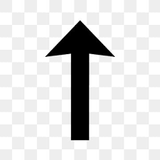

Minecraft
O que é Minecraft?
Como instalar?
• TLauncher
• Original
Como jogar?
Dimensões
•
Nether
• The End
Chefes
• Warden
• Ender Dragon
• Whiter Boss
Vamos descobrir o que é minecraft?
Minecraft é um jogo de aventura, exploração, multiplayer para você poder se divertir com amigos, nele tem cavernas, monstros, boss e muito mais. Alguns dizem que tem uma lore(Uma historia que se passa dentro do jogo) por traz, tem alguns videos no youtube, como por exemplo:
Link do vídeo :https://www.youtube.com/watch?si=pHwZ0k4Phj2_WwRS&v=AZeUDhDKN1Q&feature=youtu.be

Como Instalar?
Bom você tem duas opções de minecraft, sendo elas :
TLauncher
TLauncher é o minecraft pirata, ou seja, que jogadores fizeram pra quem não pode comprar o original,e no TLauncher você tem varias opções de mod(modificações para deixar o jogo mais legal)para escolher, diferente do original que tem que baixar um por um no google, no TLauncher você acha modpacks(conjunto de mods)sem caçar muito, e está no aplicativo, e se vc quiser baixar (não me responsabilizo por baixar ele, porque ja recebeu muitas denuncias, mais se quiser arriscar vai lá) essa versão gratuita, você só precisa acessar o site abaixo, e seguir o tutorial que está no site:
https://tlauncher.org/en/
Original
Original não tem as mesmas coisas, ao contrario do TLauncher que tem mods no proprio app, no original você tem que baixar um por um no google, e no original você pode entrar em servidores multiplayers que o minecraft pirata não pode.
Como jogar?
Com o jogo aberto você vai apertar em jogar e criar um mundo, assim que criar o mundo você vai começar a se aventurar!
Dimensões
Dimensões, são lugares no minecraft indo só atravez de portais,temos os portais do vanilla(sem mods)e de varios mods que adicionam dimensões, como:
Nether
O nether é uma das dimensões do vanilla que podemos encontrar através de um portal de obsidiana, que é uma mistura de lava e água, o nether é considerado o inferno por muitos jogadores, pq lá está cheio de lava, o lugar é todo vermelho e o mais importante é que é um dos lugares mais perigosos de se ir no minecraft.
The End
O The End(O Fim)é a ultima dimensão do vanilla que temos até agora e lá que encontramos o nosso ultimo boss chamado ender dragon, e matando esse dragão conseguimos zerar o jogo, e liberamos algumas partes do the end que antes não tinhamos acesso.
Chefes
Temos alguns Chefes no minecraft vanilla como :
Warden
O warden é o boss(chefe) mais recente que foi adicionado, sendo encontrado nas cidades ancestrais, em cavernas, ele é um dos chefes que são os mais fortes
Ender Dragon
O Ender Dragon é o ultimo boss do jogo, e derrotando ele você consegue zerar o jogo, ele so pode ser encontrado no the end, e ele dropa o ovo de dragão que só ele pode dropar, ele é o chefe mais difícil, não por ter muita vida, e nem por ser o com mais dano , e sim por ser o mais chato de se derrotar .
Whiter
Whiter é o único boss que podemos invocar a hora que quisermos, precisando so dos itens que são 3 cabeças de whiter e 4 areias da alma.
Voltar